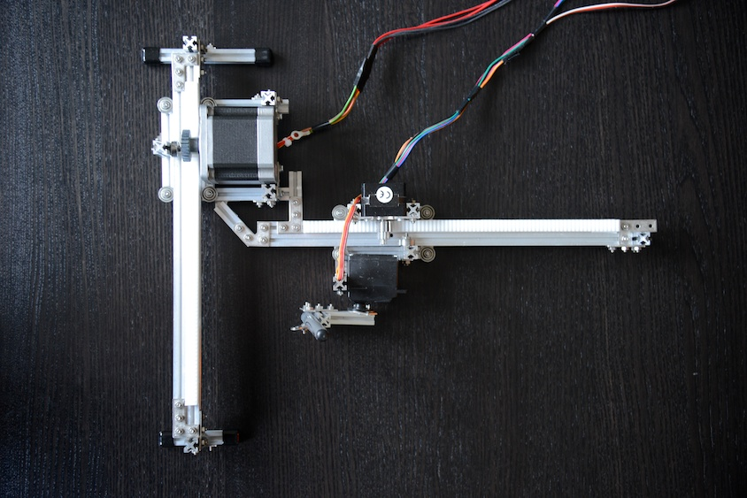
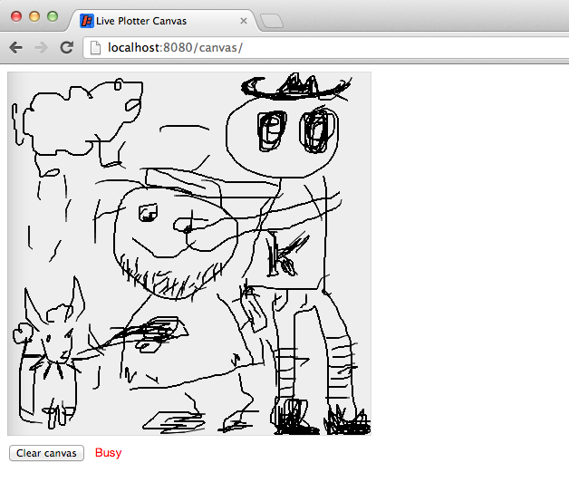

Arduino based plotter that can be controlled by drawing on an html canvas using serial communication. See it in action on YouTube. See also the similar Polar Plotter project.
This is an Arduino project that lets you draw live on paper with a homemade plotter using an html5 canvas.
It consists of the plotter controlled by an Arduino program. The program receives serial control data from a java program. This program is implemented as a web application and runs on a Jetty Web Server. The web application serves one web page with an html5 canvas on it. When drawing on the canvas, print data is sent from the browser to the server via a websocket. This data is then sent to the plotter which draws live. This uses serial communication over usb.
Multiple users can collaborate in the drawing, though only one user at a time may actually draw. The drawing history is stored on the server and a new user that hooks up gets the history replayed.
The live drawing is the main feature of this project but you can also hardcode drawing instructions into the Arduino program. For more details on these features, please the project documentation for the Polar Plotter.
This is what the plotter looks like

You draw on a canvas like so:

And here is how it works.
The construction for this plotter is to a great extent the same as that of the Polar Plotter. The Polar Plotter had to share most of its parts for this one to be built.
There is a new, smaller stepper motor controlling the y-axis action. It's a Pololu Stepper Motor 35*26mm.
The code is divided into two parts.
The webserver can be run without the plotter hooked up. Actually, serial output is disabled by default.
The webserver requires Java and Apache Maven. You also need the RXTX Library set up to enable serial communication. See http://www.arduino.cc/playground/Interfacing/Java for instructions.
To run the webserver, first checkout or download the project. Then,
$ cd canvas-server
$ mvn jetty:run
Then point your browser to http://localhost:8080/canvas/ and draw something. Open a second window to see history replayed. You can now draw from both windows, but one at a time. A busy indicator tells when someone is drawing. Touch devices are also supported. I've used iPhone and iPad.
The Arduino program obviously runs on the Arduino board. I use a Arduino UNO Rev3. Keep the usb cable hooked up to the computer as it is used for the serial communication.
You might need to edit the PORT_NAMES in the SerialCommunicator java class to match your platform. I'm on a Mac.